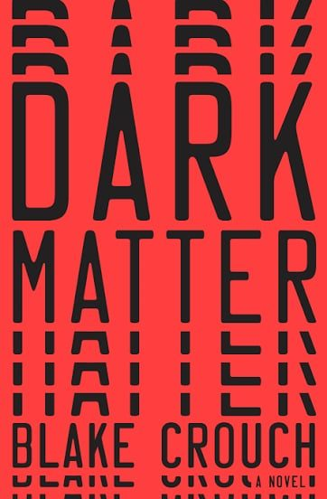

Dark Matter
Synopsis
A physics professor is abducted on his way home and wakes up in a life that is almost, but not quite, his own.
Family Night
Summary of chapter 1
Jason Dessen is a physics professor in Chicago who spends a cozy Thursday family night with his wife Daniela and teenage son Charlie. He leaves to congratulate an old friend, Ryan Holder, on winning a major science prize, but Ryan’s boasting leaves him feeling like a failure.
Walking home with ice cream, Jason is held up at gunpoint by a masked man, who forces him to drive to an abandoned industrial site and sedates him. The man asks him odd questions about his life and regrets, then injects himself with the same drug as Jason passes out.